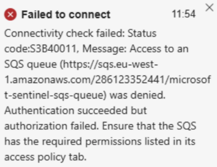
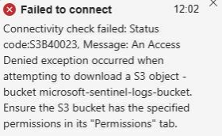

Setting up Azure Sentinel on AWS EC2 Linux servers
Scenario
Azure offer a solution for installing Sentinel on AWS EC2 Linux instances, however their script required amendment for me to get it to work and I had to make a Pull Request to resolve, as well as some additional notes and IAM rules above what Azure instructed.
Below are the notes I used, hopefully they can help you too.
Contents
Microsoft’s Azure Sentinel repoistory is located here.
- Create an IAM User
- Set Up Permissions
2a. A Note On Service Control Policies - Install AWS CLI
- Create an Access Key
- Running the Sentinel setup script
- Addendum - Notes about Sentinel access errors
Step 1 - Create an IAM User
- IAM > Users > Create User
- Name : Azure-Sentinel-User
- Leave everything else blank for now
Step 2 - Permissions
Before we can configure or run anything, we need to make sure the script has all the permissions it needs to work properly.
I came to a number of hurdles as the script ran through, most to do with lack of permissions. Azure’s recommendations and script simply didn’t add enough permissions.
The permissions below are what I ended up with once all errors had been cleared, via running the install process many times and resolving missing permissions one at at time. Hopefully it will save you a lot of time.
Therefore this is what I recommend setting up before running the script, as below. The Principle of Least Privilege was taken in to account.
- Create an IAM Policy
- Name : Azure-Sentinel-SQS
- Permissions;
{
"Version": "2012-10-17",
"Statement": [
{
"Effect": "Allow",
"Action": [
"ec2:DescribeRegions",
"iam:CreateRole",
"iam:TagRole",
"iam:GetRole",
"iam:CreateOpenIDConnectProvider",
"iam:GetOpenIDConnectProvider",
"iam:AddClientIDToOpenIDConnectProvider",
"organizations:DescribeAccount",
"s3:PutObject",
"s3:GetObject",
"s3:GetObjectVersion",
"s3:CreateBucket",
"s3:PutBucketPolicy",
"s3:GetBucketPolicy",
"s3:GetBucketNotification",
"s3:PutBucketNotification",
"s3:GetBucketAcl",
"s3:GetBucketLocation",
"kms:Decrypt",
"kms:ListAliases",
"kms:TagResource",
"kms:CreateKey",
"kms:CreateAlias",
"kms:PutKeyPolicy",
"kms:GetKeyPolicy",
"cloudtrail:GetTrail",
"cloudtrail:CreateTrail",
"cloudtrail:UpdateTrail",
"cloudtrail:AddTags",
"cloudtrail:PutEventSelectors",
"cloudtrail:StartLogging",
"sts:GetCallerIdentity",
"sqs:GetQueueUrl",
"sqs:GetQueueAttributes",
"sqs:ReceiveMessage",
"sqs:SendMessage",
"sqs:DeleteMessage",
"sqs:ListQueues",
"sqs:CreateQueue",
"sqs:TagQueue",
"sqs:SetQueueAttributes",
"sqs:ChangeMessageVisibility"
],
"Resource": "*"
}
]
}
- Attach the Azure-Sentinel-SQS policy to the user we created, Azure-Sentinel-User
That should be all of the permissions required, but if you come across any errors during the running of the script, take a look at the logs generated (./Logs/) to see which permission is required.
The script will pause and re-try each step 3 times, giving you opportunity to make the amendment to the Azure-Sentinel-SQS Policy and then re-try the step, rather than exiting the script completely.
A note regarding Service Control Policies
Hopefully you won’t come across this issue, but just incase; despite having all permissions defined in the above policy, there were still some blockers for s3:PutBucketPolicy in our AWS Root Account, within AWS Organizations > Policies > Service Control Policies.
Service Control Policies are policies defined in the Root account of larger AWS estates, that take precedence over policies defined in other accounts. In my case, s3:PutBucketPolicy was blocked by one such SCP and had to also be amended before I could run the install for Sentinel.
If you get errors regarding policies still blocking the script, but the Azure-Sentinel-SQS policy we created above looks fine, take a look in the Root account logs for errors relevant to the account you are working in, via Root Account > AWS Organizations > AWS accounts > Core > Your_Account_Name.
Find entries regarding blockage of s3:PutBucketPolicy (or anything else that could be a blocker, as per error logs from script) and amend as required.
Note that these should probably be swapped back afterwards, given it’s a Root account policy; amend, install Sentinel, revert.
It’s also possible, and actually recommended over the above, to create a new Service Control Policy that overrides any blockers presented by other SCPs. For example, if there’s an existing Policy blocking s3:PutBucketPolicy universally, you could create a new SCP to allow s3:PutBucketPolicy for specific accounts, users, etc.
Step 3 - Install AWS CLI
In order to run Microsoft’s script to set Sentinel up, we need access to AWS CLI.
- If you’re working from a Linux machine, install AWS CLI using;
curl "https://awscli.amazonaws.com/awscli-exe-linux-x86_64.zip" -o "awscliv2.zip"
unzip awscliv2.zip
sudo ./aws/install
- If you’re working from a Windows machine, you’ll need PowerShell v7+.
Install AWS CLI (and Powershell v7+ if required) before continuing.
Step 4 - Create an Access Key
We now need to set up an Access Key on the Azure-Sentinel-User account that we created earlier.
- Region
- eu-west-1
- Output
- json
Step 5 - The script
- Download the Sentinel setup script here.
You can find it on GitHub under Azure-Sentinel. At the time of writing, the script was included in the file ConfigAwsS3DataConnectorScripts.zip. - Unzip it
- At the time of downloading the script myself, it was broken. See https://github.com/Azure/Azure-Sentinel/issues/13171 and my own PR https://github.com/Azure/Azure-Sentinel/pull/13202.
If your version of the downloaded script has the same issue, resolve it before continuing. It should be OK now though, the PR was approved. - On PowerShell CLI (v7+), with AWS CLI installed, run
.\ConfigAwsConnector.ps1 - Answer each question in turn;
- Please enter the AWS Log Type to configure
- CloudTrail
- Please enter a role name
- MicrosoftSentinelRole
- Please enter your Azure Sentinel External ID (Workspace ID, you can get this within Sentinel itself)
- XXXXXXXX-XXXX-XXXX-XXXX-XXXXXXXXXXXX
- Please enter S3 Bucket name
- microsoft-sentinel-logs-bucket
- Please enter sqs name
- microsoft-sentinel-sqs-queue
- Do you wish to enabled KMS for CloudTrail
- y
- Please enter the KMS alias name
- microsoft-sentinel-kms
- Do you want to enable to Trail and CloudTrail S3 Policy for ALL accounts in your organisation?
- y
- Please enter the event notifications names
- microsoft-sentinel-event-notifications
- Do you want to override the event notification prefix?
- n
- Please enter CloudTrail name
- microsoft-sentinel-cloudtrail
- Do you want to enable the CloudTrail data events?
- y
- Do you want to Trail to be multi-regional?
- y
- Please enter the AWS Log Type to configure
Now allow the script to run through and complete. See the last section of this page if you get any errors.
At the end of running the script, you’ll get the SQS details you’ll need to input in to Sentinel itself, in order to start monitoring the EC2 server(s), something like;
Role Arn: arn:aws:iam::XXXXXXXXXXXX:role/OIDC_MicrosoftSentinelRole
Sqs Url: https://sqs.REGION.amazonaws.com/XXXXXXXXXXXX/microsoft-sentinel-sqs-queue
Destination Table: AWSCloudTrail
Addendum - Notes about Sentinel access errors
I got a couple of errors within Sentinel to resolve at the end, other than the notes above.
You may need to complete one or both of the below actions;
- I had to amend the SQS Queue’s access policy from what the script implemented, it still didn’t allow Sentinel the correct access.

This worked (where XXXXXXXXXXXX is your AWS account ID);
{
"Version": "2008-10-17",
"Statement": [
{
"Sid": "AllowS3ToSendMessages",
"Effect": "Allow",
"Principal": {
"Service": "s3.amazonaws.com"
},
"Action": "SQS:SendMessage",
"Resource": "arn:aws:sqs:eu-west-1:XXXXXXXXXXXX:microsoft-sentinel-sqs-queue",
"Condition": {
"ArnLike": {
"aws:SourceArn": "arn:aws:s3:::microsoft-sentinel-logs-bucket"
}
}
},
{
"Sid": "AllowSentinelRoleToReadQueue",
"Effect": "Allow",
"Principal": {
"AWS": "arn:aws:iam::XXXXXXXXXXXX:role/OIDC_MicrosoftSentinelRole"
},
"Action": [
"SQS:ReceiveMessage",
"SQS:DeleteMessage",
"SQS:ChangeMessageVisibility",
"SQS:GetQueueUrl",
"SQS:GetQueueAttributes"
],
"Resource": "arn:aws:sqs:eu-west-1:XXXXXXXXXXXX:microsoft-sentinel-sqs-queue"
}
]
}
- I had to amend the S3 Bucket Policy from what the script implemented, it still didn’t allow Sentinel the correct access.

The below worked, and still keeps things locked down without us having to open Public bucket access (you will need to amend the KMS Key ID, this can be found via CloudTrail > microsoft-sentinel-cloudtrail. Where XXXXXXXXXXXX appears, this is your AWS account ID.)
{
"Version": "2008-10-17",
"Statement": [
{
"Sid": "Allow Arn read access S3 bucket",
"Effect": "Allow",
"Principal": {
"AWS": "arn:aws:iam::XXXXXXXXXXXX:role/OIDC_MicrosoftSentinelRole"
},
"Action": "s3:GetObject",
"Resource": "arn:aws:s3:::microsoft-sentinel-logs-bucket-prod/*"
},
{
"Sid": "AWSCloudTrailAclCheck20150319",
"Effect": "Allow",
"Principal": {
"Service": "cloudtrail.amazonaws.com"
},
"Action": "s3:GetBucketAcl",
"Resource": "arn:aws:s3:::microsoft-sentinel-logs-bucket-prod"
},
{
"Sid": "AWSCloudTrailWrite20150319",
"Effect": "Allow",
"Principal": {
"Service": "cloudtrail.amazonaws.com"
},
"Action": "s3:PutObject",
"Resource": "arn:aws:s3:::microsoft-sentinel-logs-bucket-prod/AWSLogs/XXXXXXXXXXXX/*",
"Condition": {
"StringEquals": {
"s3:x-amz-acl": "bucket-owner-full-control"
}
}
},
{
"Sid": "Deny unencrypted object uploads. This is optional",
"Effect": "Deny",
"Principal": {
"Service": "cloudtrail.amazonaws.com"
},
"Action": "s3:PutObject",
"Resource": "arn:aws:s3:::microsoft-sentinel-logs-bucket-prod/*",
"Condition": {
"StringNotEquals": {
"s3:x-amz-server-side-encryption": "aws:kms"
}
}
},
{
"Sid": "Deny incorrect encryption header. This is optional",
"Effect": "Deny",
"Principal": {
"Service": "cloudtrail.amazonaws.com"
},
"Action": "s3:PutObject",
"Resource": "arn:aws:s3:::microsoft-sentinel-logs-bucket-prod/*",
"Condition": {
"StringNotEquals": {
"s3:x-amz-server-side-encryption-aws-kms-key-id": "arn:aws:kms:eu-west-1:XXXXXXXXXXXX:key/XXXXXXXX-XXXX-XXXX-XXXX-XXXXXXXXXXXX"
}
}
}
]
}